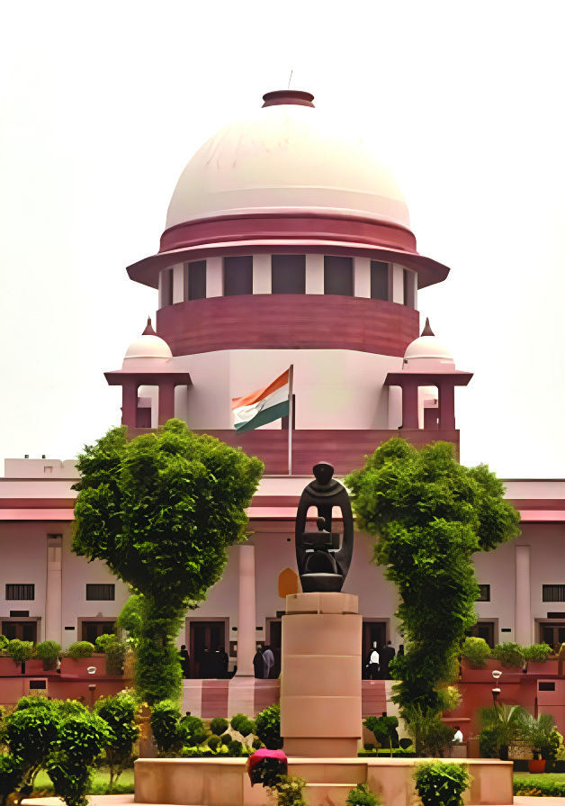
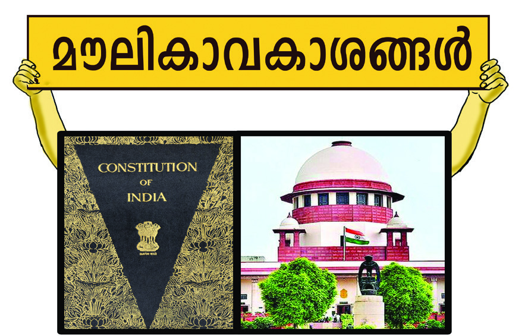
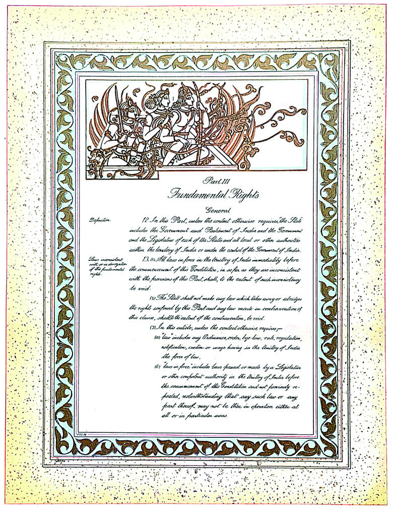
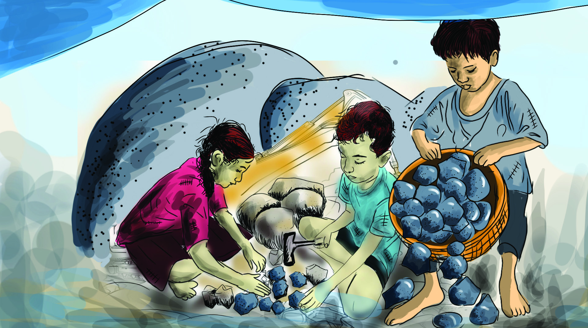
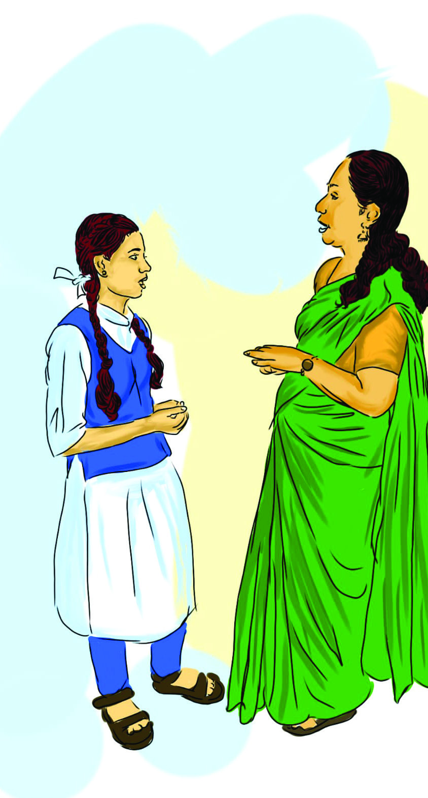
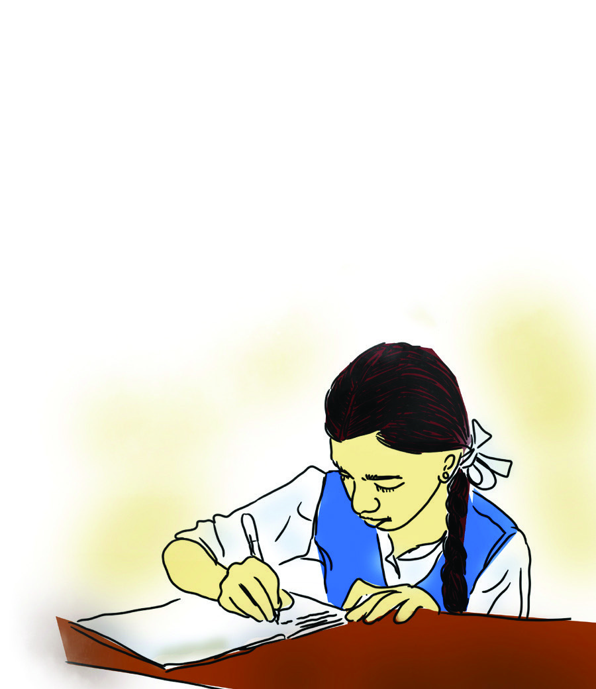
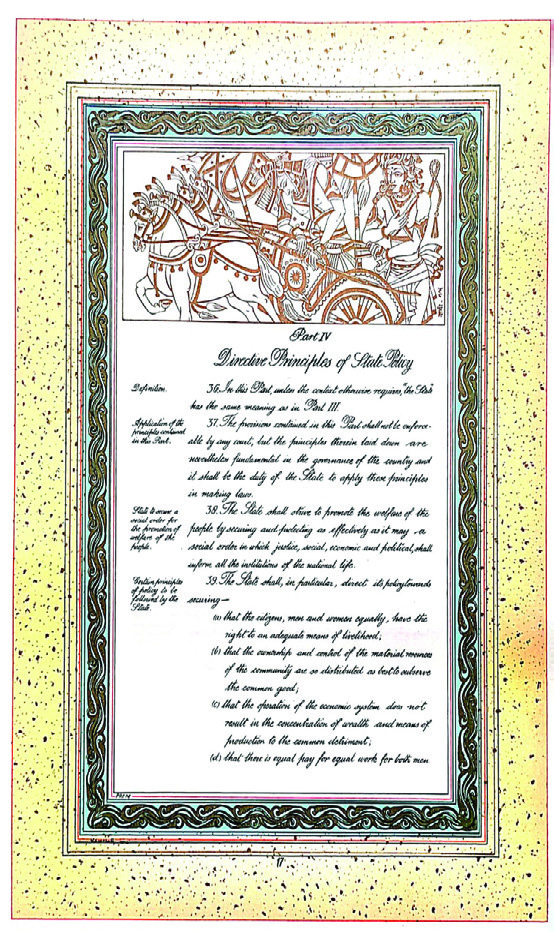
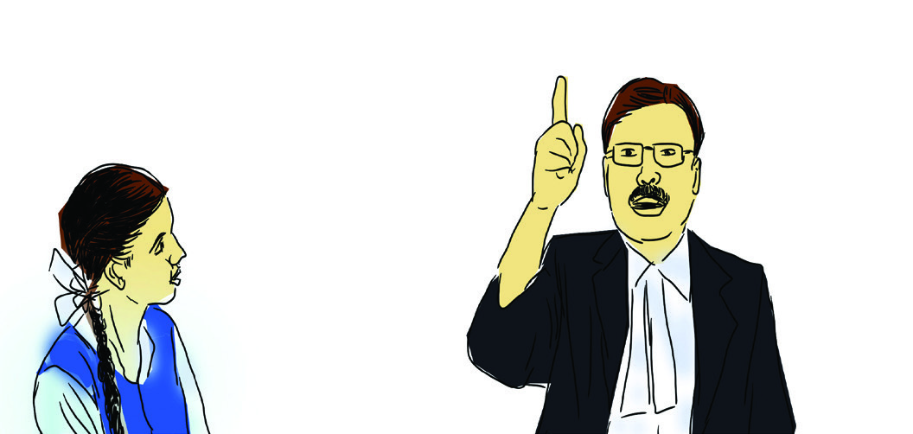
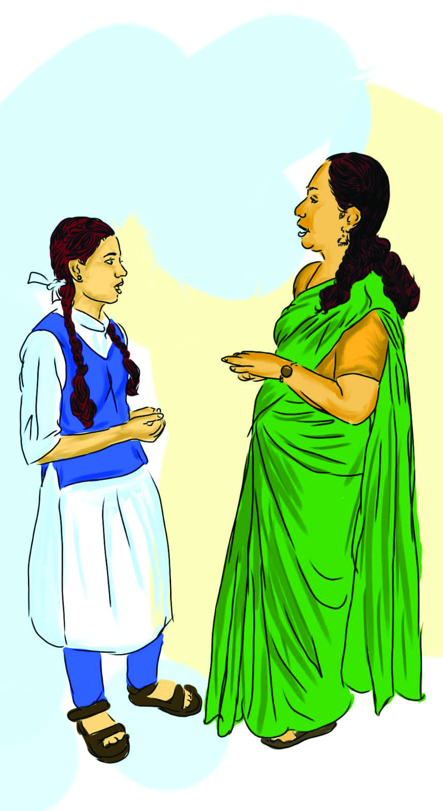

5
യൂൂണിിറ്റ്്
ഇന്ത്യയൻ ഭരണഘടന:
അവകാാശങ്ങളുംം
കർത്തവ്യങ്ങളുംം
സമത്വവത്തിിന്റെź അഭാാവത്തിിൽ,
സ്വാാ�തന്ത്ര്യംംc അനേകരുുടെെ മേ�ൽ ചുുരുുക്കംം ചിലരുുടെെ
ആധിിപത്യംc സൃഷ്ടിിക്കുംംc. സ്വാാ�തന്ത്ര്യയത്തിിന്റെź
അഭാാവത്തിിലുള്ള സമത്വംംc വ്യയക്തിിമുന്നേേųറ്റങ്ങളെെ
ഹനിക്കുംംc. സാഹോ�ോദര്യയത്തിിന്റെź അഭാാവത്തിിൽ
സമത്വവത്തിിനുംംc സ്വാാ�തന്ത്ര്യയത്തിിനുംംc സ്വാാ�ഭാാവികത
കൈൈവരിക്കാൻ കഴിിയിില്ല.
ഡോോ. ബിി.ആർ. അംംബേ�ദ്്കർ
(കോsോൺസ്റ്റിിറ്റുുവന്റ്് അസംംബ്ലിി,
നവംബർ 25, 1949)
lചിിത്രംം 5.1
നമ്മുുടെെ ഭരണഘടനാശിില്പിിയായ ഡോോ. ബിി.ആർ. അംംബേ�ദ്കർ 1949 നവംംബർ 25ന് ഭരണഘടനാ
നിർമ്മാണ സഭയിിൽ നടത്തിിയ പ്രസംംഗത്തിിന്റെź പ്രസക്തഭാാഗമാണ് മുകളിൽ നൽകിയിിരിക്കുന്നത്.
സമത്വവത്തിിന്റെźയുംംc സ്വാാ�തന്ത്ര്യയത്തിിന്റെźയുംംc സാഹോ�ോദര്യയത്തിിന്റെźയുംംc പ്രാധാന്യയമാണ് ഈ വാക്കുകളിൽ
നിന്നുംംc വ്യയക്തമാകുന്നത്.
Page 73


Page 74


1946 ഡിിസംംബർ 6 നാാണ്്
ഭരണഘടനാാനിർമ്മാാണസ
ഭ നിലവിൽ
വന്നത്്. ഡോ�ോ. രാാജേzന്ദ്രപ്രസാാദ്്
ആയിിരുന്നു സഭയുടെെ അധ്യയക്ഷൻ.
ഇന്ത്യയയുടെെ പ്രഥമ പ്രധാാനമന്ത്രിിയാായ
ജവഹർലാാൽ നെ�ഹ്റുു മൂന്ന് പ്രധാാന
ഉപസമിിതികളുുടെെ അധ്യയക്ഷനാായിിരുന്നു.
രൂപീകരണവേ�ള
യിിൽ 389
അംഗങ്ങളുുണ്ടാായിിരുന്ന സഭ 1947ൽ
സ്വാ�തന്ത്ര്യയലബ്ധിക്ക്് ശേഷംം 299
അംഗങ്ങളാായിി പുനഃസംംഘടിപ്പിിക്കപ്പെ�ട്ടുു.
ഭരണഘടനാാ
നിർമ്മാാണസഭ
ടീച്ചർ, അഭിപ്രായങ്ങൾ
തുറന്നുപറയാനുള്ള
സ്വാാ�തന്ത്ര്യയമുണ്ടെെĬന്ന്
സെ�മിിനാറിൽ പറഞ്ഞുു.
അത്് ഞങ്ങളുടെെ
അവകാശമല്ലേ�?
lചിിത്രംം 5.2
lചിിത്രംം 5.3
lചിിത്രംം 5.4
ശരിിയാണ്,
ഇവയൊ�ൊക്കെ�
രാഷ്ട്രംം ഭരണഘ
ടനാപരമാായിി
എല്ലാവർക്കുംംc
അനുവദിച്ചിട്ടുു
ള്ളവയാണ്.
ചൂഷണങ്ങളിൽ
നിന്നുംംc സംംരക്ഷണംം
ലഭിക്കാനുള്ള അവകാശവുംംc
ഞങ്ങൾക്കുണ്ടെെĬന്ന്
സെ�മിിനാറിൽ പറഞ്ഞുു.
ഇന്ത്യയൻ ഭരണഘടനയുുടെെ ആമുഖത്തിിൽ, നീതി,
സ്വാാ�തന്ത്ര്യംംc, സമത്വംംc, സാഹോ�ോദര്യം�ം എന്നിവ
എല്ലാ പൗരർക്കുമായിി സംംരക്ഷിക്കുമെെന്ന്
പ്രഖ്യാാ�പിക്കുന്നുണ്ട്. മൗ�ലികാവകാശങ്ങളായുംംc
രാഷ്ട്രനയ
ത്തിിന്റെź നിർദേ�ശകതത്വവങ്ങളായുംംc ഇവയെ�
ഭരണഘടനയിിൽ ഉൾപ്പെെƀടുത്തിിയിിരിക്കുന്നു.
അതോ�ോടൊ�ൊപ്പംം രാഷ്ട്രത്തോ�ോടും�ം
സമൂഹത്തോ�ോടും�ം
പൗരർ പുലർത്തേ�ണ്ട മൗ�ലികകർത്തവ്യയ
ങ്ങളും�ം
ഭരണഘടനയിിൽ പ്രതിപാദിച്ചിരിക്കുന്നു. ഇന്ത്യയൻ
ഭരണഘടനയിിൽ പ്രതിപാദിച്ചിട്ടുുള്ള അവകാശങ്ങളും�ം
നിർദേ�ശകതത്വവങ്ങളും�ം കർത്തവ്യയ
ങ്ങളുമാണ് ഈ
പാഠത്തിിൽ ചർച്ച ചെ�യ്യുുന്നത്.
അവകാാശങ്ങൾ (Rights)
അവകാശങ്ങളുടെെ പ്രാധാന്യയത്തെ�ക്കുുറിച്ചുള്ള സെ�മിി
നാറിൽ പങ്കെെÿടുത്തതിിന് ശേ�ഷംം കുട്ടികൾ ടീച്ചറോ�ോട്
സംംസാരിക്കുന്നത് ശ്രദ്ധിിക്കൂ.
സംംഭാാഷണത്തിിൽ പ്രതിപാദിക്കുന്ന അവകാശങ്ങൾ
ഏതൊ�ാക്കെ�യാണ്?
l
l
ഇവ കൂടാതെ� എന്തെ�ല്ലാംDZ അവകാശങ്ങ
ളാണ് നിങ്ങൾ ആഗ്രഹിക്കുന്നത്?
l
l
74
Page 75


മനുഷ്യാാ�വകാാശങ്ങൾ
(Human Rights)
മാാഗ്നാാകാാർട്ട
(Magna Carta)
മനുഷ്യർ എന്ന നിലയിിൽ
ജാാതി, മതം, വംശം,
വർണം, ദേ�ശംം, ഭാാഷ,
ലിംം�ഗപദവിി തുടങ്ങിയ
വിവേ�ചനങ്ങളേ�തുുമില്ലാാതെ�
അന്തസ്സുുറ്റതുംം�
തുല്യതയിിലധിഷ്ഠിിതവുുമാായ
ജീവിതം നയിിക്കുന്നതിന്
ലോ�ോകത്തെെĹല്ലാാവർക്കുംം�
അവകാാശമുണ്ട്.
ഇത്തരത്തിൽ
സാാർവത്രികമാായിി
മനുഷ്യന്റെ�
അഭിമാാനത്തെെĹയുംം�
വ്യക്തിിത്വവത്തെെĹയുംം�
സംംരക്ഷിക്കുന്ന
അവകാാശങ്ങളാാണ്്
മനുഷ്യാാ�വകാാശങ്ങൾ.
ബ്രിിട്ടനിിൽ അവകാാശങ്ങളെ� സംംബന്ധിിച്ച്്
രൂപപ്പെ�ട്ട ആദ്യകാാല രേ�ഖയാാണ്് മാാഗ്നാാകാാർട്ട.
വലിയപ്രമാാണം എന്നാാണ്് ഇതിന്റെ� അർഥം.
രാാജാാവുംം� രാാജാാവിന്റെ� ഭരണകൂൂടവുംം�
നിയമത്തിനതീതരല്ല എന്ന് പ്രഖ്യാാ�പിക്കുന്ന
ഔദ്യോ�ോ�ഗിക പ്രമാാണമാാണിത്്. 1215-ൽ
ഇംഗ്ലണ്ടിലെ� ഭരണാാധികാാരിയാായിിരുന്ന
ജോzാൺ രാാജാാവിനെ� ഈ രേ�ഖയിിൽ ജനങ്ങൾ
നിർബന്ധിിച്ച്് ഒപ്പുവയ് പ്പിിക്കുകയാായിിരുന്നു.
ബ്രിിട്ടീഷ് പാാർലമെെന്റിിന്റെ� അധികാാരങ്ങൾക്കുംം�
നിയമതത്വവങ്ങൾക്കുംം� ഇത്് പിന്നീട്
അടിസ്ഥാാനമാായിി മാാറി. ഇംഗ്ലണ്ടിലെ� പെ�റ്റീീഷൻ
ഓഫ്് റൈൈറ്റ്്സ്, ബിൽ ഓഫ്് റൈൈറ്റ്്സ്
എന്നീ അവകാാശരേ�ഖകൾ മാാഗ്നാാകാാർട്ടയുുടെെ
സ്വാ�ധീീനത്താാൽ രൂപപ്പെ�ട്ടവയാാണ്്.
മൗലിികാാവകാാശങ്ങളുുടെെ
നാൾവഴിി
മാഗ്നാാകാാർട്ട
(Magna Carta–1215)
പൗരാവകാശങ്ങളെെയുംംc
സ്വാാ�തന്ത്ര്യയത്തെ�യുംം
c പരാമർശിിക്കുന്ന
ലോ�ോകത്തിിലെ� ആദ്യയത്തെ�
ഔദ്യോ�ോ�ഗിക രേ�ഖ.
അവകാശങ്ങൾ എന്നാൽ ഉന്നയിിക്കപ്പെെƀടുന്ന അവകാശവാാദങ്ങ
ളിൽ സമൂഹംം സ്വീീ�കരിക്കുകയുംംc രാഷ്ട്രംം നിയമംംവഴിി അംംഗീകരിച്ച്
നടപ്പിലാക്കുകയുംംc ചെ�യ്യുുന്നവയാണ്. വ്യയക്തിികൾക്ക് അവകാശങ്ങളു
ണ്ടെെĬന്ന് ഉറപ്പുവരുുത്തേ�ണ്ടത്് ജനാധിിപത്യയസംംവിധാനങ്ങളുടെെ
ഉത്തരവാ
ാദിത്തമാാണ്. ഇവ നിയമംംവഴിി നടപ്പിലാക്കേ�ണ്ടത്് ഗവ
ൺമെെന്റാണ്. അതിനായിി മിക്ക ജനാധിിപത്യയരാാജ്യയങ്ങളുടെെയുംംc
ഭരണഘടനയിിൽ ഒരുു പട്ടിക ഉൾപ്പെെƀടുത്തിിയിിട്ടുുണ്ട്. ഈ
അവകാശങ്ങളുടെെ പട്ടിക വ്യയക്തിികളുടെെ അവകാശങ്ങളിൽ ഇടപെ�
ടുന്നതിന് ഗവൺമെെന്റിന് ചില പരിമിതികൾ ഏർപ്പെെƀടുത്തിിയിിരി
ക്കുന്നു. കൂടാതെ� അവകാശലംംഘനമുണ്ടായാൽ അതിനുള്ള പരിഹാ
രവുംംc ഉറപ്പാക്കുന്നു.
മൗലിികാാവകാാശങ്ങൾ (Fundamental Rights)
അന്തർദേ�ശീീയതലത്തിിൽ മനുഷ്യാാ�വകാശങ്ങളായിി കണക്കാ
ക്കുന്നതുംംc ജനാധിിപത്യയസംംവിധാനത്തിിൽ പൗരരുുടെെ അന്തസ്സിിനുംംc
സ്വാാ�തന്ത്ര്യയത്തിിനുംംc അതിജീവനത്തിിനുംംc അനിവാര്യയവുമായ
ചില അടിസ്ഥാാന അവകാശങ്ങളുണ്ട്. രാഷ്ട്രങ്ങൾ അംംഗീകരിച്ച്
സംംരക്ഷിക്കുകയുംംc നടപ്പിലാക്കുകയുംംc ചെ�യ്യുുന്ന ഇത്തരംം
അവകാശങ്ങളാണ് മൗ�ലികാവകാശങ്ങൾ. ലോ�ോകത്ത് വിവിധ
രാജ്യയങ്ങളുടെെ ഭരണഘടനകളിൽ അതത്് രാജ്യയങ്ങളിലെ� സാഹച
ര്യയങ്ങൾക്കനുുസരിച്ച് ചില സുപ്രധാന അവകാശങ്ങൾ മൗ�ലി
കാവകാശങ്ങളായിി ഉൾക്കൊ�ൊള്ളിിച്ചിട്ടുുണ്ട്. മാനവചരിിത്രത്തിിലെ�
ചില സുപ്രധാന ഏടുകളാണ് മൗ�ലികാവകാശങ്ങൾ എന്ന
ആശയ
ത്തിിലേ�ക്ക്് വഴിിതെ�ളിിച്ചത്്. താഴെെ കൊ�ൊടുുത്തിിരിക്കുന്ന
ഫ്ലോƌോചാാർട്ട് ശ്രദ്ധിിക്കൂ.
75
ഇന്ത്യയൻ ഭരണഘടന-
അവകാാശങ്ങളുംം കർത്തവ്യങ്ങളുംം
Page 76


ഐക്യരാഷ്ട്രസംംഘടനയുുടെെ
സാർവദേശീയ മനുുഷ്യാാ�വകാാശ
പ്രഖ്യാാ�പനം
(Universal Declaration of Human Rights–1948)
എല്ലാ അംംഗരാജ്യയങ്ങളിലുംംc
നടപ്പിലാക്കുന്നതിനായിി
ഐക്യയരാഷ്ട്രസംം
ഘടന പുറപ്പെെƀടുവിച്ച
അവകാശരേ�ഖ.
മുകളിൽ കൊ�ൊടുുത്തിിരിക്കുന്ന അവകാശരേ�ഖകൾ മൗ�ലികാവ
കാശങ്ങൾ എന്ന ആശയ
ത്തിിന്റെź രൂപീകരണത്തിിൽ സുപ്ര
ധാന പങ്കുവഹിച്ചിട്ടുുണ്ട്. പല ജനാധിിപത്യയരാാജ്യയങ്ങളിലെ�യുംംc
ഭരണഘടനയിിൽ മൗ�ലികാവകാശങ്ങൾ ഉൾപ്പെെƀടുത്തിിയതിിൽ ഇവ
സ്വാാ�ധീനംം ചെ�ലുുത്തിിയിിട്ടുുണ്ട്. നമ്മുുടെെ ഭരണഘടനയിിലുംംc ചില
അവകാശങ്ങൾ മൗ�ലികാവകാശങ്ങളായിി ഉൾക്കൊ�ൊള്ളിിച്ചിട്ടുുണ്ട്.
മൗലിികാാവകാാശങ്ങൾ ഇന്ത്യയൻ ഭരണഘടനയിൽ
അമേ�രിക്കൻ ഭരണഘടനയിിൽ
ഉൾക്കൊ�ാള്ളിിച്ചിട്ടുുള്ള അവകാാശ
പത്രികയിിലാാണ്് (Bill of Rights)
അവകാാശങ്ങളെ�ക്കുുറിച്ച്് പ്രതിപാാദിച്ചിരി
ക്കുന്നത്്. മതവിിശ്വാ�സത്തിനുള്ള അവകാാശം,
അഭിപ്രാായ
പ്രകടനത്തിനുള്ള അവകാാശം,
മാാധ്യയമപ്രവർത്തനത്തിനുള്ള അവകാാശം,
സമാാധാാനപരമാായിി സംംഘം ചേ�രാാനുള്ള
അവകാാശം, ജീവനുംം� സ്വവത്തിനുംം�
സംംരക്ഷണത്തിനുള്ള അവകാാശം തുടങ്ങിയ
അവകാാശങ്ങൾ അമേ�രിക്കൻ ഭരണഘടന
പൗരർക്ക്് ഉറപ്പ് നൽകുന്നുണ്ട്. .
1789ൽ ഫ്രാാൻസിലെ� ദേ�ശീീയ
അസംംബ്ലിി പ്രഖ്യാാ�പിച്ച
അവകാാശരേ�ഖയാാണ്്
മനുഷ്യാാ�വകാാശ
പ്രഖ്യാാ�പനം. എല്ലാാ
പൗരർക്കുംം� വ്യക്തിിഗതവുംം�
കൂട്ടാായതു
ുമാായ
അവകാാശങ്ങൾ ഈ രേ�ഖ
പ്രഖ്യാാ�പിക്കുന്നുണ്ട്.
പൗരർ ജന്മനാാ സ്വവതന്ത്രരും�ം
അവകാാശങ്ങളിൽ
തുല്യതയുുള്ളവരുമാാണെ�ന്നുംം�
സാാമൂഹികവ്യത്യാാ�സ
ങ്ങൾ
പൊ�ാതുനന്മയുടെെ
അടിസ്ഥാാനത്തിൽ മാാത്രമേ�
സ്ഥാാപിക്കപ്പെ�ടുുകയുു
ള്ളൂവെ�ന്നുംം� ഈ പ്രഖ്യാാ�പനം
പറയുുന്നു.
അമേ�രിിക്കൻ അവകാാശ പത്രിിക
(United States Bill of Rights)
ഫ്രഞ്ചുുവിപ്ലവത്തെ� തുുടർന്നുുണ്ടാായ
മനുുഷ്യാാ�വകാാശപ്രഖ്യാാ�പനം
(Declaration of the Rights of Man
and of the Citizen – 1789)
ലോ�ോകരാജ്യയങ്ങളെെ
സ്വാാ�ധീനിച്ച മനുഷ്യാാ�വകാശങ്ങളെെ
നിർവചിക്കുന്ന അവകാശപ്രമാണംം.
അമേ�രിിക്കൻ അവകാാശ പത്രിിക
(United States Bill of Rights – 1789)
ലോ�ോകത്തിിലെ� ആദ്യയത്തെ�
എഴുതപ്പെെƀട്ട ഭരണഘടനയിിൽ
പരാമർശിിച്ചിരിക്കുന്ന അവകാശരേ�ഖ.
ഫ്രാാൻസിലെ
മനുഷ്യാാ�വകാാശ
പ്രഖ്യാാ�പനം
(The Declaration of the
Rights of Man and of the
Citizen)
lചിിത്രംം 5.5
76
Page 77



ഇന്ത്യയൻ ഭരണഘടനയിിൽ മൗ�ലികാവകാശങ്ങൾ ഉൾപ്പെെƀടുത്തുന്നതിൽ
ഭരണഘടനാനിർമ്മാതാക്കളെെ സ്വാാ�ധീനിച്ച നിരവധിി ഘടകങ്ങളുണ്ട്.
ബ്രിിട്ടീഷ് ഭരണകാലത്ത് ഇന്ത്യയൻ ജനത അനുഭവിിക്കേ�ണ്ടിവന്ന അവകാശ
നിഷേ�ധങ്ങളാണ് അതിൽ പ്രധാനംം. സ്വാാ�തന്ത്ര്യയസമരംം ഉയർത്തിിപ്പിടിച്ച
മൂല്യയങ്ങൾ, ഇന്ത്യയൻ നവോ�ോത്ഥാാനപ്രസ്ഥാാനത്തിിന്റെź ആശയങ്ങൾ എന്നിവ
ഭരണഘടനയിിലെ� മൗ�ലികാവകാശങ്ങളെെ സ്വാാ�ധീനിച്ച മറ്റുഘടകങ്ങളാണ്.
മറ്റുരാജ്യയങ്ങളുടെെ ഭരണഘടനകളിൽ പരാമർശിിച്ചിട്ടുുള്ള അവകാശ
ങ്ങളും�ം മൗ�ലികാവകാശങ്ങളുടെെ നാൾവഴിികളായ അവകാശരേ�ഖകളും�ം
നമ്മുുടെെ ഭരണഘടനയിിലെ� മൗ�ലികാവകാശങ്ങളെെ സ്വാാ�ധീനിച്ചിട്ടുുണ്ട്.
ഇന്ത്യയൻ ഭരണഘടനയിിൽ മൗ�ലികാാവകാാശങ്ങൾ
ഉൾപ്പെ�ടുുത്തുന്നതിനെ� സ്വാ�ധീീനിച്ച ഘടകങ്ങൾ
ഏതെ�ല്ലാാമാായിിരുന്നു? പട്ടിക പൂർത്തിയാാക്കുക.
l കോsോളനിി ഭരണകാാലത്ത് അനുഭവിച്ച
അവകാാശനിഷേ�ധങ്ങൾ
l ലോ�ോകസാാഹചര്യങ്ങൾ
l
ഇന്ത്യയൻ ഭരണഘടനയുുടെെ ഭാാഗംം മൂന്നിലാണ് (Part III)
മൗ�ലികാവകാശങ്ങൾ ഉൾച്ചേ�ർത്തിിരിക്കുന്നത്. സാധാരണയായിി
നിയമപരമാായ അവകാശങ്ങളെെ സംംരക്ഷിക്കുകയുംംc നടപ്പിലാക്കു
കയുംംc ചെ�യ്യുുന്നത് സാധാരണ നിയമങ്ങളാണ്. എന്നാൽ
മൗ�ലികാവകാശങ്ങളെെ സംംരക്ഷിക്കുന്നതുംംc ഉറപ്പുവരുുത്തുന്നതുംംc
ഭരണഘടനയാാണ്. ഭരണഘടന ഉറപ്പുനൽകുന്ന മൗ�ലികാവകാ
ശങ്ങൾ എന്തൊ�ൊക്കെ�യെ�ന്ന്
് പരിശോ�ോധിിക്കാംം.
സമത്വവത്തിനുുള്ള അവകാാശം (Right to Equality)
നമ്മുുടെെ രാജ്യയത്ത് എല്ലാവർക്കുംംc നിയമത്തിിനുമുന്നിൽ
തുല്യയതയുംംc തുല്യയനിയമസംംരക്ഷണവുംംc ഉറപ്പുവരുുത്തുന്ന
അവകാശമാാണ് സമത്വവത്തിിനുള്ള അവകാശംം. ഈ അവകാശ
പ്രകാരംം മതംം, വർഗംം, ജാതി, ലിംംcഗംം, ജനനസ്ഥലംം തുടങ്ങിയവ
യുടെെ അടിസ്ഥാാനത്തിിൽ യാതൊ�ൊ
രുുവിവേ�ചനവുംംc പാടുള്ളതല്ല.
ഇതോ�ോടൊ�ൊപ്പംം ഹോ�ോട്ടലുുകൾ, കടകൾ, കിണറുകൾ, കുളങ്ങൾ, പൊ�ൊതുുസ്നാാനഘട്ടങ്ങൾ, പൊ�ൊതുു
നിരത്തുകൾ എന്നിവിടങ്ങളിൽ തുല്യയപ്രവേ�ശനവുംംc ഉറപ്പുനൽകുന്നു. പൊ�ൊ
തുജോ�ോലികളിലെ�
അവസരസമത്വവവുംംc തൊ�ൊ
ട്ടുുകൂടായ്മ നിരോ�ോധനവുംംc സ്ഥാാനപ്പേേƀരുുകൾ നിർത്തലാാക്കലുംം
c ഈ
അവകാശപ്രകാരംം ഉറപ്പുവരുുത്തുന്നു.
ഭരണഘടനാാദിിനം
നവംബർ 26
ഇന്ത്യയയിിൽ
ഭരണഘടനാാദിനമാായിി
ആചരിിക്കുന്നു.
1949 നവംബർ 26ന്
ഭരണഘടനാാ
നിർമ്മാാണസ
ഭ
ഇന്ത്യയൻ ഭണഘടന
അംഗീകരിച്ചതിിന്റെ�
ഓർമ്മയ്ക്കാായാാണ്്
ഈ ദിനം
ആചരിിക്കുന്നത്്.
77
ഇന്ത്യയൻ ഭരണഘടന-
അവകാാശങ്ങളുംം കർത്തവ്യങ്ങളുംം
Page 78


ഇന്ത്യയൻ ഭരണഘടനയിിൽ പ്രതിപാാദിച്ചിരിക്കുന്ന സമത്വംം� എന്ന അവകാാശത്തിന്റെ�
ലംഘനങ്ങൾ നിങ്ങളുുടെെ ശ്രദ്ധയിിൽപ്പെ�ട്ടിിട്ടുുണ്ടോ�ോ? അവയെ�ന്തെ�ല്ലാാമെെന്ന്
രേ�ഖപ്പെ�ടുുത്തുക.
l
l
സ്വാാ�തന്ത്ര്യയത്തിനുുള്ള അവകാാശം (Right to Freedom)
ദീർഘകാലംം വൈൈദേ�ശിിക ആധിിപത്യയത്തിിനുകീഴിിൽ കഴിിയേ�ണ്ടിവന്ന
ഇന്ത്യയൻ ജനതയുുടെെ അഭിലാഷമാണ് സ്വാാ�തന്ത്ര്യയത്തിിനുള്ള അവകാശംം
എന്ന മൗ�ലികാവകാശത്തിിൽ പ്രതിഫലിക്കുന്നത്. ഭരണഘടനയുുടെെ 19
മുതൽ 22 വരെെയുുള്ള അനുഛേേyദങ്ങൾ ഇതുപ്രകാരംം സ്വാാ�തന്ത്ര്യയത്തിിനുള്ള
അവകാശങ്ങളും�ം യുക്തിിസഹമായ നിയന്ത്രണങ്ങളും�ം വിശദീീകരിക്കുന്നു.
അനുഛേേyദംം 19 ൽ പരാമർശിിച്ചിട്ടുുള്ള സ്വാാ�തന്ത്ര്യയങ്ങൾ താഴെെപ്പറയുന്നവയാണ്.
ഇവ കൂടാതെ�
വിദ്യാ�ാഭ്യാ�ാസത്തിിനുള്ള
അവകാശംം, ജീവനുംംc
വ്യയക്തിിസ്വാാ�തന്ത്ര്യയത്തിിനുമുള്ള
അവകാശംം തുടങ്ങിയ
അവകാശങ്ങൾ 20 മുതൽ 22
വരെെയുുള്ള അനുഛേേyദങ്ങളിൽ
പ്രതിപാദിക്കുന്നുണ്ട്.
രാജ്യയത്തിിന്റെź അഖണ്ഡത,
പരമാാധിികാരംം, സുരക്ഷിതത്വംംc
തുടങ്ങിയ സാഹചര്യയങ്ങളിൽ
ഈ സ്വാാ�തന്ത്ര്യയങ്ങൾ
യുക്തിിസഹമായ നിയന്ത്രണ
ങ്ങൾക്ക് വിധേ�യമാാണ്.
മുകളിിൽ കൊsാടുത്തിരിക്കുന്ന ചിിത്രംം ഏത്് അവകാാശത്തെെĹയാാണ്് സൂചിിപ്പിിക്കുന്നത്്?
സമാാധാാനപരമായി
സമ്മേേƣളിക്കാനുുള്ള സ്വാാ�തന്ത്ര്യംം�
ഇഷ്ടമുുള്ള തൊ�ൊഴിിൽ, വ്യവസായം, കച്ചവടം
എന്നിവയിൽ ഏർപ്പെെƀടുുന്നതിനുുള്ള
സ്വാാ�തന്ത്ര്യംം�
സംംഘടനകൾ
രൂപീകരിിക്കുുവാാനുുള്ള സ്വാാ�തന്ത്ര്യംം�
ഇന്ത്യയയിലെ�വിിടെെയുംം� സ്വതന്ത്രമാായി
സഞ്ചരിിക്കുുവാാനുുള്ള സ്വാാ�തന്ത്ര്യംം�
അഭിപ്രായ പ്രകടനത്തിനുംം�
ആവിഷ്്കാാരത്തിനുുമുുള്ള സ്വാാ�തന്ത്ര്യംം�
ഇന്ത്യയയിലെ�വിിടെെയുംം� സ്ഥിിരമായി
താമസി
ിക്കുുവാാനുുള്ള സ്വാാ�തന്ത്ര്യംം�
lചിിത്രംം 5.7
78
Page 79



വിദ്യാ�ാഭ്യാ�ാസ അവകാാശനിയമംം
(Right to Education Act 2009)
2002-ലെ� 86-ാംDZ ഭരണഘടനാഭേ�ദഗതിയിിലൂടെെ അനുഛേേyദംം
21എ പ്രകാരമാാണ് വിദ്യാ�ാഭ്യാ�ാസംം മൗ�ലികാവകാശമാായിി
പ്രഖ്യാാ�പിക്കപ്പെെƀട്ടത്്. 2009-ൽ വിദ്യാ�ാഭ്യാ�ാസ അവകാശനിിയമംം
പാർലമെെന്റ് അംംഗീകരിച്ചു. 2010 ഏപ്രിലിൽ നിയമംം പ്രാബല്യയ
ത്തിിൽ വന്നു. ഈ നിയമപ്രകാരംം ആറ് വയസി
ിനുംംc പതിനാല്
വയസി
ിനുംംc ഇടയിിലുള്ള എല്ലാ കുട്ടികൾക്കുംംc സൗജന്യയവുംംc
നിർബന്ധിിതവുംംc ഗുണനിലവാരമുുള്ളതുമായ വിദ്യാ�ാഭ്യാ�ാസംം
ഉറപ്പാക്കി.
ചൂൂഷണത്തി
ിനെ�തിിരായ അവകാാശം (Right Against Exploitation)
നമ്മുുടെെ രാജ്യയത്ത് പല വിഭാാഗംം ജനങ്ങളും�ം മുഖ്യയധാരയിിൽ നിന്നുംംc
അകറ്റി നിർത്തപ്പെെƀടുന്നതുംംc ചൂഷണംം ചെ�യ്യപ്പെെƀടുന്നതുമായ
സാമൂഹികസാഹചര്യം�ം നിലവിലുണ്ടായിിരുുന്നു. അടിമത്തംം, മനുഷ്യയക്കടത്ത്,
നിർബന്ധിിത ജോ�ോലി, ബാലവേ�ല തുടങ്ങിയ ചൂഷണങ്ങളെെ ഇല്ലാതാക്കി
സുരക്ഷിതജീീവിതംം ഉറപ്പുനൽകുകയാണ് ചൂഷണത്തിിനെെതിരായ
അവകാശത്തിിലൂടെെ ഇന്ത്യയൻ ഭരണഘടന ചെ�യ്യുുന്നത്. ഭരണഘടനയുുടെെ
അനുഛേേyദംം 23 എല്ലാവിധ അടിമജോ�ാലികളെെയുംംc മനുഷ്യയക്കച്ചവടത്തെ�യുംംc
നിരോ�ാധിിക്കുകയുംംc കുറ്റകരമാായിി പ്രഖ്യാാ�പിക്കുകയുംംc ചെ�യ്യുുന്നു.
അനുഛേേyദംം 24 പ്രകാരംം 14 വയസ്സിിന് താഴെെയുുള്ള കുട്ടികളെെ ഖനിക
ളിലോ�ാ വ്യയവസായശാാലകളിലോ�ാ മറ്റ് അപകടമേ�ഖലകളിലോ�ാ ജോ�ാലി
ചെ�യ്യിിക്കുന്നത് നിരോ�ാധിിക്കുന്നു.
‘ഭരണഘടന ഉറപ്പുനൽകുന്ന സ്വാ�തന്ത്ര്യയങ്ങൾ വ്യക്തിിജീവിതത്തിൽ’
എന്ന വിഷയത്തിൽ പാാനൽ ചർച്ച സംംഘടിപ്പിിക്കുക.
കുട്ടികൾക്കെ�തിിരാായ
ചൂഷണ
ങ്ങളിലൊ�ൊ
ന്നാാണ്് ചിിത്രത്തി
ിൽ
നൽകിയിിരിക്കുന്നത്്.
മറ്റെെന്തെ�ല്ലാംDZ
ചൂഷണ
ങ്ങൾ
നിങ്ങളുുടെെ ശ്രദ്ധയിിൽ
പെ�ട്ടിിട്ടുുണ്ട്?
രേ�ഖപ്പെ�ടുുത്തുക.
l
l
lചിിത്രംം 5.8
lചിിത്രംം 5.9
79
ഇന്ത്യയൻ ഭരണഘടന-
അവകാാശങ്ങളുംം കർത്തവ്യങ്ങളുംം
Page 80



‘മതസ്വാ�തന്ത്ര്യംം� ഇന്ത്യയൻ മതേ�തരത്വവത്തെെĹ ശക്തിിപ്പെ�ടുുത്തുന്നു’ എന്ന വിഷയത്തിൽ
ചർച്ച സംംഘടിപ്പിിച്ച്് കുറിപ്പ് തയ്യാാറാാക്കുുക.
മതസ്വാാ�തന്ത്ര്യയത്തിനുുള്ള അവകാാശം
(Right to Freedom of Religion)
ഇന്ത്യയയിിൽ ഓരോ�ാരുുത്തർക്കുംംc സ്വീീ�കാര്യയമായ മതംം അനുവർത്തിിക്കുന്നതിനുംംc
അനുഷ്ഠിിക്കുന്നതിനുംംc പ്രചരിിപ്പിക്കുന്നതിനുമുള്ള സ്വാാ�തന്ത്ര്യംംc ഭരണഘടന
അനുവദിക്കുന്നു. ഈ അവകാശംം അവരവരുുടെെ മനഃസാക്ഷിക്കനുുസരിച്ച്
പ്രവർത്തിിക്കുവാനുള്ള സ്വാാ�തന്ത്ര്യംംc ഉൾക്കൊ�ൊള്ളുുന്നതാണ്. എല്ലാ മതങ്ങൾ
ക്കുംംc തുല്യയപരിഗണനയുംംc തുല്യയസംംരക്ഷണവുംംc മതസ്വാാ�തന്ത്ര്യയത്തിിനുള്ള
അവകാശംം ഉറപ്പുനൽകുന്നുണ്ട്. എന്നാൽ മേ�ൽപ്പറഞ്ഞ അവകാശംം
പൊ�ാതുക്രമംം, ആരോ�ാഗ്യം�ം, ധാർമ്മികത എന്നിവയുടെെ നിയന്ത്രണങ്ങൾക്ക്
വിധേ�യമാായിിരിക്കുംംc.
സാംംസ്കാാരികവുംം� വിദ്യാ�ാഭ്യാ�ാസപരവുുമായ
അവകാാശങ്ങൾ (Cultural and Educational Rights)
വൈൈവിധ്യയങ്ങൾ നിറഞ്ഞ ഒരുു രാജ്യയമാണ് ഇന്ത്യയ. മതപരവുംംc
ഭാാഷാപരവുംംc സാംംസ്കാാരികവുമായ ന്യൂൂ�നപക്ഷവിഭാാഗങ്ങൾ
ഈ വൈൈവിധ്യയത്തിിന്റെź സവിശേ�ഷതയാാണ്. രാജ്യയത്തിിന്റെź
ഏതെ�ങ്കിിലുമൊ�ൊ
രുു പ്രത്യേ�േകഭാാഗത്തോ�ോ രാജ്യയത്തൊ�ൊട്ടാകയോ�ോ
മറ്റ് വിഭാാഗങ്ങളേേക്കാൾ എണ്ണത്തിിൽ കുറവുള്ളവരും�ം
ഒരുു പൊ�ൊതുുഭാാഷയോ�ോ മതമോ�ോ
സംംസ്കാാരമോ�ോ
പിന്തുടരുു
ന്നവരുുമായ ജനവിഭാാഗങ്ങളാണ് ന്യൂൂ�നപക്ഷങ്ങൾ. ന്യൂൂ�നപ
ക്ഷവിഭാാഗങ്ങൾക്ക് അവരുുടെെ സംംസ്കാാരവുംംc ഭാാഷയുംംc ലിപി
യുംംc സംംരക്ഷിക്കുന്നതിനുംംc വികസിപ്പിക്കുന്നതിനുമുള്ള
മാർഗങ്ങളാണ് സാംംസ്കാാരികവുംംc വിദ്യാ�ാഭ്യാ�ാസപരവുുമായ
അവകാശങ്ങൾ. ഇതുപ്രകാരംം മതപരവുംംc ഭാാഷാപരവുംംc
സാംംസ്കാാരികവുമായ എല്ലാ ന്യൂൂ�നപക്ഷങ്ങൾക്കുംംc അവരുുടേ�
തായ വിദ്യാ�ാഭ്യാ�ാസസ്ഥാാപനങ്ങൾ സ്ഥാാപിക്കുന്നതിനുംംc
നടത്തുുന്നതിനുമുള്ള അവകാശമുുണ്ട്. അതിലൂടെെ അവർക്ക്
സ്വന്തംം സംംസ്കാാരത്തെ�
സംംരക്ഷിക്കുവാനുംംc പരിപോ�ോഷിപ്പിക്കു
വാനുംംc സാധിിക്കുംംc.
നമ്മുടെെ സംംസ്ഥാാനത്തെെĹ ന്യൂൂ�നപക്ഷ വിഭാാഗങ്ങൾ ഏതൊ�ാക്കെ�യാാണ്്?
കണ്ടെ�ത്തി എഴുുതുക.
l ഭാാഷാാന്യൂൂ�നപക്ഷങ്ങൾ
l
l
l
ഞങ്ങൾക്ക്്
വിദ്യാ�ാഭ്യാ�ാസംം സൗജന്യമാായിി
ലഭിക്കുന്നത്് സാംംസ്കാാരികവുംം�
വിദ്യാ�ാഭ്യാ�ാസപരവുമാായ
അവകാാശപ്രകാാരമാാണോ�ോ?
അല്ല, സൗജന്യവിദ്യാ�ാഭ്യാ�ാസംം
സ്വാ�തന്ത്ര്യയത്തിനുള്ള
അവകാാശത്തിന്റെ�
ഭാാഗമാാണ്്. സാംംസ്കാാരികവുംം�
വിദ്യാ�ാഭ്യാ�ാസപരവുമാായ
അവകാാശങ്ങൾ
ന്യൂൂ�നപക്ഷങ്ങളെ�
സംംബന്ധിിച്ചുള്ളതാാ
ണ്്.
lചിിത്രംം 5.10
80
Page 81


മൗ�ലികാാവകാാശങ്ങളിൽ
ഏറ്റവുംം� പ്രാാധാാന്യയമേ�റിിയത്്
ഭരണഘടനാാപരമാായ
പരിഹാാരങ്ങൾക്കുള്ള
അവകാാശമാാണ്് എന്നുപറയുുന്നത്്
എന്തുകൊsാണ്ടാായിിരിക്കുംം�?
l
l
മൗലിികാാവകാാശങ്ങൾ
(Fundamental Rights)
സമത്വവത്തിനുുള്ള
അവകാാശം
(അനുഛേേyദംം
14 മുതൽ 18 വരെെ)
മതസ്വാാ�തന്ത്ര്യയത്തിനുുള്ള
അവകാാശം
(അനുഛേേyദംം
25 മുതൽ 28 വരെെ)
സ്വാാ�തന്ത്ര്യയത്തിനുുള്ള
അവകാാശം
(അനുഛേേyദംം
19 മുതൽ 22 വരെെ)
ചൂൂഷണത്തി
ിനെ�തിിരായ
അവകാാശം
(അനുഛേേyദംം 23, 24)
ഭരണഘടനാപരമായ
പരിഹാാരങ്ങൾക്കുുള്ള
അവകാാശം
(അനുഛേേyദംം 32)
ഭരണഘടനാപരമായ
പരിഹാാരങ്ങൾക്കുുള്ള അവകാാശം
(Right to Constitutional Remedies)
വ്യയക്തിിയുടെെ രക്ഷയ്ക്കുംംc ഭദ്രതയ്ക്കുംംc നൽകാവുന്ന അതിശ്രേ�
ഷ്ഠമാായ പരിരക്ഷകളിലൊ�ാന്നാണ് ഭരണഘടനാപരമാായ
പരിഹാരങ്ങൾക്കുള്ള അവകാശംം. മേ�ൽപ്പറഞ്ഞ മൗ�ലികാ
വകാശങ്ങളിൽ ഏതെ�ങ്കിിലുംംc ലംംഘിക്കപ്പെെƀടുന്ന പക്ഷംം
അവ പുനഃസ്ഥാാപിച്ച് കിട്ടുുന്നതിന് അനുഛേേyദംം 32
പ്രകാരംം സുപ്രീംംcകോ�ോടതിിയെ�യുംംc അനുഛേേyദംം 226
പ്രകാരംം ഹൈൈക്കോ�ോടതിികളെെയുംംc സമീപിക്കാവുന്നതാണ്.
സുപ്രീംംcകോ�ോടതിിയുംംc ഹൈൈക്കോ�ാടതിികളും�ം റിട്ടുുകളിലൂടെെ
യാണ് മൗ�ലികാവകാശങ്ങൾ പുനഃസ്ഥാാപിക്കുന്നത്.
മൗ�ലികാവകാശങ്ങൾ സംംരക്ഷിക്കുന്നതിനായിി സുപ്രീംംc
കോ�ോടതിിയോ�ോ, ഹൈൈക്കോ�ോടതിിയോ�ോ പുറപ്പെെƀടുവിക്കുന്ന
ഉത്തരവു
ുകളും�ം നിർദേ�ശങ്ങളുമാണ് റിട്ടുുകൾ. ഇന്ത്യയൻ
ഭരണഘടനയുുടെെ ഹൃദയവുംംc ആത്മാാവുമാണ് ഈ
അവകാശമെെന്ന്
് ഡോാ. ബിി.ആർ. അംംബേ�ദ്കർ വിശേ�ഷിി
പ്പിക്കുന്നു.
സാംംസ്കാാരികവുംം�
വിദ്യാ�ാഭ്യാ�ാസപരവുുമായ
അവകാാശങ്ങൾ
(അനുഛേേyദംം
29 മുതൽ 30 വരെെ)
lചിിത്രംം 5.11
81
ഇന്ത്യയൻ ഭരണഘടന-
അവകാാശങ്ങളുംം കർത്തവ്യങ്ങളുംം
Page 82



ഹേബിിയസ് കോ�ാർപ്പസ് (Habeas Corpus) : അന്യാാ�യമാായിി തടങ്കലിൽ വച്ചിട്ടുുള്ള
ഒരാാളെ� കോsാടതിക്ക്് മുൻപാാകെെs ഹാാജരാാക്കാാൻ ആവശ്യപ്പെ�ട്ടുുകൊsാണ്ട്് കോsാടതി
പുറപ്പെ�ടുുവിക്കുന്ന ഉത്തരവ്.
മാാൻഡമസ് (Mandamus) : ഒരു ഉദ്യോ�ാ�ഗസ്ഥൻ തന്റെ� നിയമപരമാായ കർത്തവ്യംം�
നിറവേ�റ്റാാതിിരിക്കുന്നതുമൂലം മറ്റൊ�ാരു വ്യക്തിിയുടെെ അവകാാശം ഹനിക്കപ്പെ�ടുുന്നതാായിി
കോsാടതി കണ്ടെ�ത്തുമ്പോƠാൾ പുറപ്പെ�ടുുവിക്കുന്ന ഉത്തരവ്.
പ്രൊ�ൊഹിബിിഷൻ (Prohibition) : തങ്ങളുുടെെ അധികാാരപരിധിയിിൽ വരാാത്ത ഒരു കേsസ്
കീഴ്ക്കോ�ാടതികൾ പരിഗണിക്കുന്നത്് വിലക്കിക്കൊ�ാണ്ടുുള്ള സുപ്രീംം�കോsാടതിയുടെെയോ�ാ
ഹൈൈക്കോ�ാടതിയുടെെയോ�ാ ഉത്തരവ്.
ക്വോ�ാ�വാാറന്റോźാ (Quo Warranto) : ഒരു ഉദ്യോ�ാ�ഗസ്ഥൻ അർഹതയിില്ലാാത്ത സ്ഥാാനം
വഹിക്കുന്നത്് തടഞ്ഞുുകൊsാണ്ട്് കോsാടതി പുറപ്പെ�ടുുവിക്കുന്ന ഉത്തരവ്.
സെ�ർഷ്യോ�ാ�റെെറൈൈ (Certiorari) : ഒരു കീഴ്ക്കോ�ാടതിയുടെെ പരിഗണനയിിലിരിക്കുന്ന കേsസ്
മേ�ൽക്കോ�ാടതിയിിലേ�ക്ക്് കൈൈമാാറ്റം ചെ�യ്യാാനുള്ള ഉത്തരവ്.
‘മനുഷ്യന്റെ� അന്തസ്സുുറ്റ ജീവിതത്തിൽ മൗ�ലികാാവകാാശങ്ങളുുടെെ പങ്ക് ’ എന്ന
വിഷയത്തിൽ ചർച്ച സംംഘടിപ്പിിച്ച്് റിപ്പോ�ോർട്ട് തയ്യാാറാാക്കുുക.
രാഷ്ട്രനയത്തിന്റെെź നിർദേശകതത്വവങ്ങൾ
(Directive Principles of State Policy)
അവകാശങ്ങൾക്കുംംc സ്വാാ�തന്ത്ര്യയങ്ങൾക്കുമൊ�ൊപ്പംം സാമൂഹിക-
സാമ്പത്തിിക നീതിക്കുംംc തുല്യയപ്രാധാന്യയമുണ്ട്. ഇത്് കൈൈവരിക്കുന്നതി
നുള്ള ആശയങ്ങളാണ് രാഷ്ട്രനയ
ത്തിിന്റെź നിർദേ�ശകതത്വവങ്ങളിൽ
ഉൾപ്പെെƀടുത്തിിയിിട്ടുുള്ളത്്.
എല്ലാവിഭാാഗംം
ജനങ്ങളുടെെയുംംc
ക്ഷേ�മവുംംc പുരോ�ോഗതിയുംംc ഉറപ്പുവരുുത്തിിക്കൊ�ൊണ്ട്് ക്ഷേ�മരാഷ്ട്രംം
സ്ഥാാപിക്കുകയാണ് ഇതിന്റെź ലക്ഷ്യംc. മൗ�ലികാവകാശങ്ങളിൽ
നിന്നുംംc വ്യയത്യയസ്തമായിി ഇവ കോ�ോടതിിയുടെെ പിൻബലത്തോ�ോടെെെ
നടപ്പാക്കാൻ കഴിിയുന്നവയല്ല. അതേ�സമയംം സർക്കാരുുകൾ നയങ്ങളും�ം
പരിപാടികളും�ം ആവിഷ്കരിക്കുമ്പോ�ോൾ ഈ നിർദേ�ശകതത്വവങ്ങൾക്ക്
മതിയായ പരിഗണന നൽകേ�ണ്ടതുണ്ട്. ഭരണഘടനയുുടെെ ഭാാഗംം
IV-ൽ അനുഛേേyദംം 36 മുതൽ 51 വരെെയാാണ് നിർദേ�ശകതത്വവങ്ങൾ
ഉൾക്കൊ�ാള്ളിച്ചിരിക്കുന്നത്. ഭരണനിർവഹണത്തിിലുംംc നിയമനിർമ്മാ
ണത്തിിലുംംc സർക്കാരുുകൾ പാലിക്കേ�ണ്ട നിർദേ�ശങ്ങളാണിവ.
രാഷ്ട്രത്തിിന്റെź സാമ്പത്തിിക-സാ
ാമൂഹിക-വിിദ്യാ�ാഭ്യാ�ാസ-അന്താരാഷ്ട്ര
റിട്ടുകൾ പലവിധംം
ഭരണഘടനയുടെെ
ഭാാഗം IV - കൈൈയെ�ഴുുത്ത് പ്രതി.
lചിിത്രംം 5.12
82
Page 83

വിഷയങ്ങളെെയെ�ല്ലാംDZ സ്പർശിിക്കുന്ന വിപുലമായ ആശയ
ങ്ങളാണ്
നിർദേ�ശകതത്വവങ്ങളിൽ ഉൾക്കൊ�ാള്ളുന്നത്. രാഷ്ട്രനയ
ത്തിിന്റെź നിർദേ�ശക
തത്വവങ്ങളെെ ഉദാര ആശയങ്ങൾ, സോ�ോഷ്യയലിസ്റ്റ്് ആശയങ്ങൾ, ഗാന്ധിിയൻ
ആശയങ്ങൾ എന്നിങ്ങനെെ മൂന്നായിി തരംംതി
ിരിക്കാംം.
ഉദാാര
ആശയങ്ങൾ
സോ�ാഷ്യയലിസ്റ്റ്്
ആശയങ്ങൾ
ഗാാന്ധിിയൻ
ആശയങ്ങൾ
l അന്താാരാാ
ഷ്ട്ര
സമാാധാാനവുംം�
സുരക്ഷിതത്വവവുംം�
അഭിവൃദ്ധിപ്പെ�ടുുത്തുക
l പൗരർക്ക്് ഏകരൂപമാായ
നിയമസംംഹിത
l തുുല്യനീതിയുംം� സൗജന്യ
നിയമസഹാായവുംം�
l ആറുുവയസ്സിൽ
താാഴെെയുുള്ള കുട്ടികൾക്ക്്
പരിചരണവുംം�
വിദ്യാ�ാഭ്യാ�ാസവുംം�
വ്യവസ്ഥ ചെ�യ്യൽ
l പരിസ്ഥിതി,
കന്നുകാാലി,
വന്യജീവി സംംരക്ഷണം
l തൊ�ാഴിിലാാളികൾക്ക്്
ജീവിക്കാാനാാ
വശ്യമാായ
വേ�തനംം
l സ്ത്രീീക്കുംം� പുരുഷനുംം�
തുല്യജോോzോലിക്ക്്
തുല്യവേ�തനംം
l വ്യവസാായശാാലകളുുടെെ
നടത്തിപ്പിിൽ
തൊ�ാഴിിലാാളികളുുടെെ
പങ്കാാളിിത്തം
l തൊ�ൊഴിിൽ
ചെ�യ്യുുന്നതിനുള്ള
അവകാാശം
l നീതിപൂർവകവുംം�
മാാനുഷികവുമാായ
തൊ�ൊഴിിൽ
സാാഹചര്യങ്ങളും�ം
പ്രസവാാനുകൂല്യങ്ങളും�ം
ഉറപ്പുവരുത്തുക
l ഗ്രാാമപഞ്ചാായത്തുകൾ
സംംഘടിപ്പിിക്കുക
l കുടിൽ വ്യവസാായങ്ങൾ
പരിപോ�ോഷിപ്പിിക്കുക
l കൃഷിയുംം�
മൃഗസംംരക്ഷണവുംം�
l ലഹരി പാാനീയങ്ങളുു
ടെെയുംം� ആരോ�ോഗ്യത്തിന്
ഹാാനികരമാായ
മരുന്നുകളുുടെെയുംം�
ഉപഭോ�ോഗത്തിനുള്ള
നിരോ�ോധനംം
l പട്ടികജാാതി-പട്ടികവർഗ
വിഭാാഗങ്ങളുുടെെയുംം�
മറ്റ് ദുർബല
വിഭാാഗങ്ങളുുടേ�യുംം�
ഉന്നമനം
രാാഷ്ട്രനയത്തിന്റെ� നിർദേ�ശകതത്വവങ്ങൾ സമൂൂഹജീവിതത്തിന്റെ� ഏതെ�ല്ലാംDZ തലങ്ങളെ�
സ്പർശിക്കുന്നു. – പട്ടികപ്പെ�ടുുത്തുക.
l സാാമൂഹിക-സാാമ്പത്തിക നീതി
l
l ജനക്ഷേ�മം
l
മൗലിികാാവകാാശങ്ങളുംം നിർദേശകതത്വവങ്ങളുംം:
വ്യത്യാാ�സങ്ങൾ
ഇന്ത്യയൻ ഭരണഘടനയിിൽ പ്രതിപാദിക്കുന്ന മൗ�ലികാവകാശങ്ങളും�ം
രാഷ്ട്രനയ
ത്തിിന്റെź
നിർദേ�ശകതത്വവങ്ങളും�ം
പരസ്പരപൂ
ൂരകങ്ങ
ളാണ്. മൗ�ലികാവകാശങ്ങൾ ഗവൺമെെന്റിന്റെź അധിികാരങ്ങൾക്ക്
പരിധിിനിർണ്ണയിിക്കുമ്പോ�ോൾ നിർദേ�ശകതത്വവങ്ങൾ ചില കാര്യയങ്ങൾ
ചെ�യ്യാാൻ ഗവൺമെെന്റിനെെ പ്രേ�രിിപ്പിക്കുന്നു. മൗ�ലികാവകാശങ്ങൾ
പ്രധാനമായുംംc വ്യയക്തിികളുടെെ അവകാശങ്ങളെെയാണ് സംംരക്ഷിക്കുന്നത്.
83
ഇന്ത്യയൻ ഭരണഘടന-
അവകാാശങ്ങളുംം കർത്തവ്യങ്ങളുംം
Page 84



ഇല്ല. സൗജന്യയ
വിദ്യാ�ാഭ്യാ�ാസംം പോ�ാലുള്ള
മൗ�ലികാവകാശങ്ങൾ
ലംംഘിക്കപ്പെെƀടുമ്പോ�ാഴാണ്
നമുക്ക് നേരിട്ട് സുപ്രീംംc
കോ�ാടതിിയെ� സമീപിക്കാൻ
സാധിിക്കുക.
എന്നാൽ നിർദേ�ശകതത്വവങ്ങൾ സമൂഹത്തിിലെ� എല്ലാ
ജനവിഭാാഗങ്ങളുടെെയുംംc ക്ഷേ�മംം ഉറപ്പുവരുുത്തുന്നു.
മൗ�ലികാവകാശങ്ങൾ
ലംംഘിക്കപ്പെെƀടുമ്പോ�ോൾ
സുപ്രീംംcകോ�ോടതിിയെ�യോ�ോ
ഹൈൈക്കോ�ോടതിിയെ�യോ�ോ
സമീപിക്കാൻ സാധിിക്കുംംc. നിർദേ�ശകതത്വവങ്ങൾ
ലംംഘിക്കപ്പെെƀട്ടാൽ കോ�ോടതിിയെ�
സമീപിക്കാൻ
സാധിിക്കുകയിില്ല. മൗ�ലികാവകാശങ്ങളിൽ ഭേ�ദഗതി
വരുുത്തുന്നതിനായിി സങ്കീർണ്ണമായ നടപടിക്രമങ്ങൾ
ആവശ്യയമാണ്. നിർദേ�ശകതത്വവങ്ങളുടെെ ഭേ�ദഗതി
നടപടികൾ താരതമ്യേ�േന
ലളിതവുംംc നിയമനിർമ്മാ
ണത്തിിലൂടെെ നടപ്പിലാക്കാവുന്നതുമാണ്. ജനാധിി
പത്യയപ്രക്രിയയിിൽ മൗ�ലികാവകാശങ്ങൾ രാഷ്ട്രീയ
ജനാധിിപത്യയത്തെ�
പ്രാവർത്തിികമാക്കുമ്പോ�ോൾ മാർഗ
നിർദേ�ശകതത്വവങ്ങൾ സാമൂഹിക-സാ
ാമ്പത്തിിക ജനാധിി
പത്യയത്തെ�യാാണ് സാക്ഷാത്്കരിക്കുന്നത്.
മൗലിികാാവകാാശങ്ങൾ
നിർദേശകതത്വവങ്ങൾ
l കോ�ോടതിിവഴിി പുനഃസ്ഥാാപിക്കാൻ
സാധിിക്കുംംc
l നടപ്പിൽ വരുുത്തുന്നതിനായിി കോ�ോടതിിയെ�
സമീപിക്കാൻ കഴിിയിില്ല
l
l
l
l
l
l
മൗ�ലികാാവകാാശങ്ങളും�ം നിർദേ�ശകതത്വവങ്ങളും�ം തമ്മിലുള്ള വ്യത്യാാ�സ
ങ്ങൾ,
കണ്ടെ�ത്തി എഴുുതുക.
സാാമൂഹിക സാാമ്പത്തിക നീതി
ലക്ഷ്യംം�വെ�ച്ചുകൊsൊണ്ടുുള്ള
നിർദേ�ശങ്ങളാാണ്് രാാഷ്ട്രനയത്തിന്റെ�
നിർദേ�ശകതത്വവങ്ങളാായിി
ഭരണഘടനയിിൽ
ഉൾക്കൊ�ൊള്ളിിച്ചിരിക്കുന്നത്്.
കാാലാാകാാലങ്ങളിൽ ആവശ്യാാ�നുസൃതം
ഈ നിർദേ�ശങ്ങൾ പലതുംം�
നിയമനിർമ്മാാണത്തിലൂടെെ
നടപ്പിിലാാക്കാാറുുണ്ട്.
ഗ്രാാമപഞ്ചാായത്തുകൾ സംംഘടിപ്പിിക്കുക
എന്ന ഗാാന്ധിിയൻ ആശയമാാണ്്
1993ലെ� പഞ്ചാായത്തീരാാജ്-
നഗരപാാലിക നിയമങ്ങളിലൂടെെ
നടപ്പിിലാാക്കിയിിട്ടുുള്ളത്്. ഉദാാര
ആശയമാായ സൗജന്യവിദ്യാ�ാഭ്യാ�ാസമാാണ്്
2009-ലെ� വിദ്യാ�ാഭ്യാ�ാസ അവകാാശ
നിയമത്തിലൂടെെ നടപ്പിിലാാക്കിയിിട്ടുുള്ളത്്.
1986ലെ� പരിസ്ഥിതി സംംരക്ഷണ
നിയമവുംം� ഉദാാര ആശയത്തിന്റെ�
പ്രതിഫലനമാാണ്്. 1976ലെ�
തുല്യവേ�തന നിയമംം സോ�ോഷ്യലിസ്റ്റ്
ആശയമാായ സ്ത്രീീക്കുംം� പുരുഷനുംം�
തുല്യജോോzോലിക്ക്് തുല്യവേ�തനംം എന്ന
തത്വംം� പ്രാാവർത്തികമാാക്കുന്നതിനാായിി
നടപ്പിിലാാക്കിയതാാണ്്.
നിർദേ�ശകതത്വവങ്ങൾ -
പ്രയോ�ോഗത്തിിൽ
സൗജന്യയനിയമ
സഹായംം എന്ന
നിർദേ�ശകതത്വംംc
നടപ്പിൽവരുുത്താ
തിരുുന്നാൽ
അതിനെെതിരെെ
നേരിട്ട് സുപ്രീംംc
കോ�ോടതിിയെ�
സമീപിക്കാൻ
സാധിിക്കുമോ�ോ?
lചിിത്രംം 5.13
84
Page 85


മൗലിിക കർത്തവ്യങ്ങൾ
‘ഓരോ�ോരുത്തരും�ം ഓർക്കേ�ണ്ടത്് ഞാാനൊ�ൊരു
ഇന്ത്യയക്കാാരനാായിിരിക്കുമ്പോോƠോൾ തന്നെ� എനിക്ക്് എല്ലാാ
അവകാാശങ്ങളോ�ോടൊ�ൊപ്പം നിയതമാായ
ചുമതലകളും�ം ഉണ്ടെ�ന്നാാണ്്.’
-സർദാാർ വല്ലഭ് ഭാായി പട്ടേ�ൽ
ഇന്ത്യയയുുടെെ പ്രഥമ ഉപപ്രധാനമന്ത്രിയുംംc ആഭ്യയന്തരമന്ത്രിയുമായ
സർദാർ വല്ലഭ് ഭാായിി പട്ടേ�ലിിന്റെź വാക്കുകൾ ശ്രദ്ധിിച്ചല്ലോ�ോ? ഇന്ത്യയൻ
പൗരർക്ക് അവകാശങ്ങളോോടൊ�ൊപ്പംം നിയതമാായ ചുുമതലകളുമുണ്ടാ
കണമെെന്നാണ് അദ്ദേേŔഹംം സൂചിപ്പിക്കുന്നത്.
അവകാശങ്ങളും�ം കർത്തവ്യയ
ങ്ങളും�ം ഒരേ�നാാണയത്തിിന്റെź രണ്ട് വശ
ങ്ങളാണ്. പൗരർ പാലിക്കേ�ണ്ടതാായ ചില കടമകൾ നമ്മുുടെെ
ഭരണഘടനയിിൽ ഉൾക്കൊ�ൊള്ളിിച്ചിട്ടുുണ്ട്.
പൗരരുുടെെ മൗ�ലിക കർത്തവ്യയ
ങ്ങളെെക്കുറിച്ച് നിർദേ�ശങ്ങൾ സമർപ്പി
ക്കുന്നതിനായിി 1976-ൽ കേ�ന്ദ്രസർക്കാർ നിയോ�ാഗിച്ച കമ്മിറ്റിയാണ്
സർദാർ സ്വരൺസിംംcഗ് കമ്മിറ്റി. കമ്മിറ്റിയുടെെ നിർദേ�ശങ്ങൾ
പരിഗണിച്ച് 1976-ൽ 42-ാംDZ ഭരണഘടനാഭേ�ദഗതിയുടെെ ഭാാഗമായിി
മൗ�ലികകർത്തവ്യയ
ങ്ങൾ ഉൾക്കൊ�ാള്ളുന്ന ഒരുു പുതിയ ഭാാഗംം
(IV A) ഭരണഘടനയിിൽ ഉൾപ്പെെƀടുത്തിി. ഇതുപ്രകാരംം 51എ എന്ന
അനുഛേേyദമായിിട്ടാണ് മൗ�ലികകർത്തവ്യയ
ങ്ങൾ ഭരണഘടനയുുടെെ
ഭാാഗമായിിത്തീർന്നത്.
പൗരർ എന്ന നിലയിിൽ ഭരണഘടനയെ� അനുസരിക്കുക, രാജ്യയത്തെ�
കാത്തുസൂക്ഷിക്കുക, രാജ്യം�ം ആവശ്യയപ്പെെƀടുമ്പോ�ോൾ ദേ�ശീീയസേ�
വനംം
അനുഷ്ഠിിക്കുക, പരിസ്ഥിതി സംംരക്ഷിക്കുക തുടങ്ങിയവ മൗ�ലിക
കർത്തവ്യയ
ങ്ങളിൽ ഉൾപ്പെെƀടുന്ന ആശയങ്ങളാണ്. എല്ലാ പൗരരും�ം
രാഷ്ട്രത്തോ�
ാടും�ം സമൂഹത്തോ�ാടും�ം പാലിച്ചിരിക്കേ�ണ്ട കർത്തവ്യയ
ങ്ങൾ എന്തെ�ന്ന്
് ബോ�ാധ്യയപ്പെെƀടുത്തുന്നതാണിവ. പതിനൊൊന്ന്
ചുുമതലകളാണ് മൗ�ലിക കർത്തവ്യയ
ങ്ങളായിി ഭരണഘടയിിൽ
ഉൾച്ചേ�ർത്തിിരിക്കുന്നത്. ഇവയിിൽ ചിലത്് ധാർമ്മികമായതുംംc
മറ്റുചിലത്് പൗരധർമ്മപരമാായതുുമാണ്. പൗരർ മൗ�ലികാവകാശ
ങ്ങൾ അനുഭവിിക്കുമ്പോ�ോൾ മൗ�ലികകർത്തവ്യയ
ങ്ങളെെക്കുറിച്ചു
കൂടി ബോ�ോധമുുള്ളവരാകണമെെന്നതാാണ് ഇതിന്റെź അടിസ്ഥാാനതത്വംംc.
ഇന്ത്യയൻ പൗരർ
ചിില കടമകൾ
നിർവഹിക്കേ�ണ്ടതുുണ്ടെ�ന്ന്്
ഭരണഘടന
അനുശാാസിക്കുന്നത്്
എന്തുകൊsൊണ്ടാാണ്്?
രാാഷ്ട്രത്തിന്റെ� ഐക്യവുംം�
അഖണ്ഡതയുംം�
സംംരക്ഷിക്കുന്നതിനാായാാണ്്
പൗരർ ചിില കടമകൾ
അനുഷ്ഠിിക്കേ�ണ്ടതുുണ്ടെ�ന്ന്്
ഭരണഘടന പറയുുന്നത്്.
lചിിത്രംം 5.14
lചിിത്രംം 5.15
85
ഇന്ത്യയൻ ഭരണഘടന-
അവകാാശങ്ങളുംം കർത്തവ്യങ്ങളുംം
Page 86


ഇന്ത്യയൻ ഭരണഘടനയിിലെ� മൗ�ലികകർത്തവ്യങ്ങളിൽ ചിിലത്്
താാഴെെക്കൊ�ാടുുത്തിരിക്കുന്നു. മറ്റെെന്തെ�ല്ലാംDZ കർത്തവ്യങ്ങളാാണ്് ഇന്ത്യയൻ
പൗരർക്ക്് ഭരണഘടനാാനുസൃതം നിർവഹിക്കാാനു
ുള്ളതെ�ന്ന്
് പാാഠപുസ്തകത്തിന്റെ�
അവസാാനഭാാഗത്തുനിന്നുംം� കണ്ടെ�ത്തി ചർച്ചചെ�
യ്ത്് കുറിപ്പ് തയ്യാാറാാക്കുുക.
l ഭരണഘടനയെ� അനുസരിിക്കുകയുംം� അതിന്റെ� ആദർശങ്ങളെ�യുംം�
സ്ഥാാപനങ്ങളെ�യുംം� ദേ�ശീീയപതാാകയെ�യുംം� ദേ�ശീീയഗാാനത്തെെĹയുംം� ആദരിിക്കുകയുംം�
ചെ�യ്യുുക.
l സ്വാ�തന്ത്ര്യയത്തിനുവേ�ണ്ടിിയുള്ള നമ്മുടെെ ദേ�ശീീയസ
മരത്തിന് പ്രചോ�ാദനംം നൽകിയ
മഹനീയ ആദർശങ്ങളെ� പരിപോ�ാഷിപ്പിിക്കുകയുംം� പിന്തുടരുകയുംം� ചെ�യ്യുുക.
l
l
നമ്മുുടെെ ഭരണഘടന വ്യയക്തിികളുടെെ അന്തസ്സു
ുറ്റ ജീവിതത്തിിന് അത്യയന്താപേ�
ക്ഷിതമാായ അവകാശങ്ങൾ മൗ�ലികാവകാശങ്ങളായിി ഉറപ്പുനൽകുന്നു.
ഒപ്പംം സമൂഹക്ഷേ�മത്തിിനായുള്ള രാഷ്ട്രനയ
ത്തിിന്റെź നിർദേ�ശകതത്വവങ്ങൾ
മുന്നോųോട്ടുുവയ്ക്കുുകയുംംc ചെ�യ്യുുന്നു. രാഷ്ട്രത്തിിന്റെź അഖണ്ഡതയ്ക്കുംംc നില
നിൽപ്പിനുമുതകുുന്ന മൗ�ലികകർത്തവ്യയ
ങ്ങളും�ം ഭരണഘടനയിിൽ പരാമർശിി
ച്ചിട്ടുുണ്ട്. ഈ വിധത്തിിൽ ഭരണഘടന അവകാശങ്ങളുടെെയുംംc കർത്തവ്യയ
ങ്ങ
ളുടെെയുംംc ഒരുു സംംഹിതയാായിി പ്രവർത്തിിക്കുന്നു.
തുുടർപ്രവർത്തനങ്ങൾ
l ‘മൗ�ലികാവകാശങ്ങളുടെെ സംംരക്ഷണത്തിിൽ കോ�ോടതിികളുടെെ പങ്ക് ’ എന്ന വിഷയത്തിിൽ
നിയമവിദഗ്ധരുുമായിി അഭിമുഖംം സംംഘടിപ്പിക്കുക.
l ‘മൗ�ലികാവകാശങ്ങൾ പൂർണ്ണഅർഥത്തിിൽ അനുഭവിിക്കാൻ മൗ�ലിക കർത്തവ്യയ
ങ്ങൾ ശരിിയായിി
നിർവഹിക്കേ�ണ്ടതുുണ്ട്’ ഈ വിഷയത്തിിൽ പാനൽ ചർച്ച സംംഘടിപ്പിക്കുക.
l മൗ�ലികാവകാശങ്ങൾ, നിർദേ�ശകതത്വവങ്ങൾ, മൗ�ലികകർത്തവ്യയ
ങ്ങൾ എന്നിവയെ�ക്കുുറിച്ചുള്ള
പത്രവാർത്തകൾ ശേ�ഖരിച്ച് ഡിജിറ്റൽ ആൽബംം തയ്യാറാക്കുക.
86